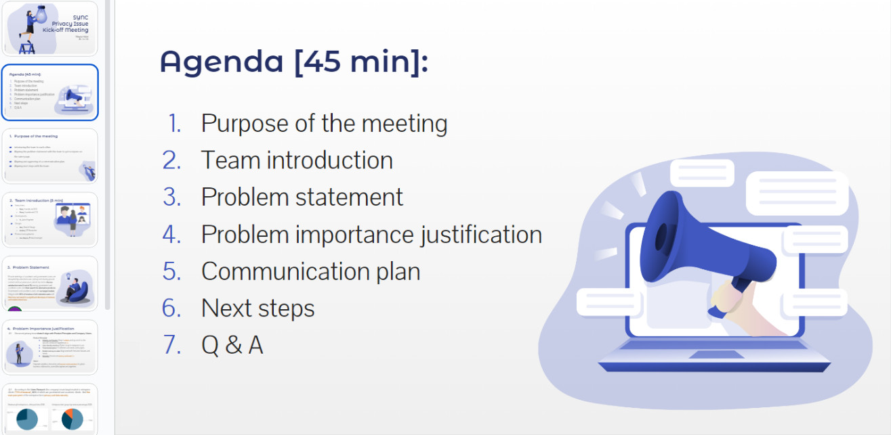
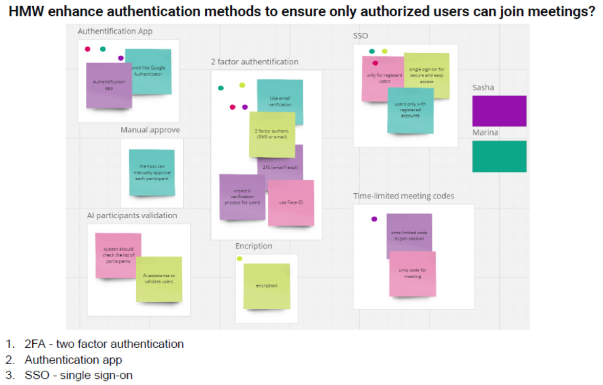
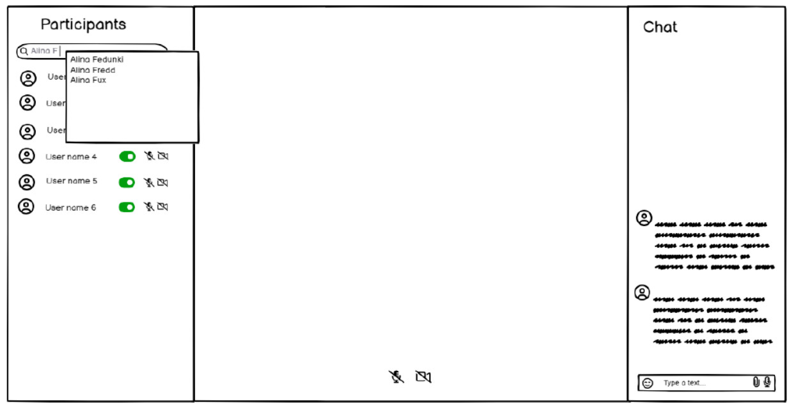
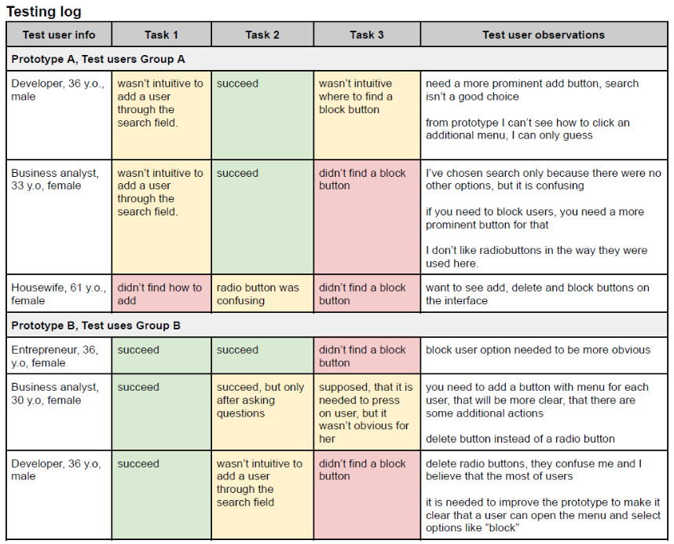
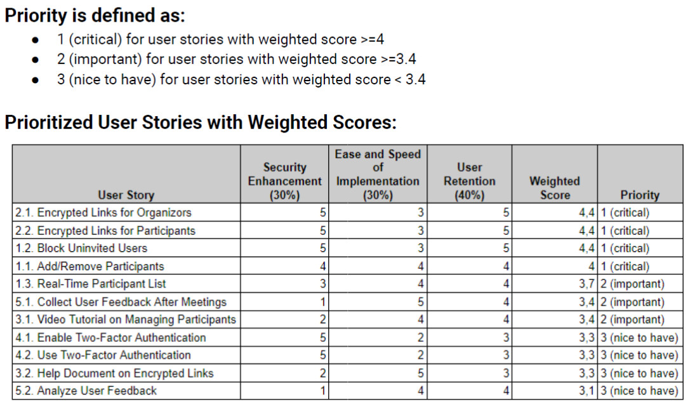
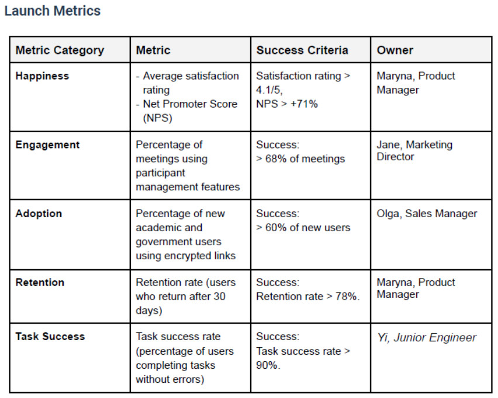

Retaining Enterprise Clients for Sync (CareerFoundry training project)
Tools
Balsamiq, Miro, G Suite, Confluence, Slack, Loom
Skills
Agile (Scrum), User Research, Stakeholder Management, Prioritizing (RICE, MoSCoW, Effort vs Impact Matrix, Weighted Scores), Lo-Fi Wireframing, A/B User Testing, PRD Development, OKRs Defining, Scope and Backlog Defining (Epics, User Stories, Acceptance Criteria), Launch Planning (HEART, AARRR metrics)
Duration
3.5 Months
Context & Problem
Sync, a widely used video conferencing platform with over 500 million monthly active users, faced a critical challenge: government and academic clients were experiencing significant disruptions from uninvited users joining their meetings. This issue jeopardized client trust and threatened to cause a substantial loss of 46% of the company’s corporate revenue. The task was clear but complex: to pinpoint the root causes of dissatisfaction, develop targeted solutions, and restore client confidence.
Objective
The main objective was to develop a strategic solution that would address the security and control concerns of our enterprise clients, particularly in the government and academic sectors. The goal was to retain these clients by enhancing platform features, thereby improving satisfaction and preventing churn.
My Approach
STEP 1. Understanding the Problem
I led a series of discovery sessions and a kick-off meeting to align the project with Sync’s broader objectives of client retention and revenue growth. Through user surveys I was able to identify the primary pain points: inadequate meeting security and insufficient control for meeting hosts.
STEP 2. Research & Ideation
With a clear understanding of the problem, I facilitated ideation workshops with the dev team using Miro, where we explored potential solutions. The workshops leveraged "How Might We" exercises, brainstorming, and dot-voting to generate and refine ideas. A Value Proposition Canvas and Causal Graph were used to analyze and prioritize the most promising solutions.
STEP 3. Prototyping
I translated the top ideas into lo-fi wireframes using Balsamiq, focusing on enhanced participant management. These prototypes were essential in visualizing how the proposed solution would work in practice and served as a basis for user testing.
STEP 4. Validation & Refinement
To ensure the solutions would meet client expectations, I conducted A/B testing on the wireframes. This user feedback was crucial in refining the features and defining a MVP that focused on the most impactful solutions. The testing phase also involved crafting a PRD that detailed the scope, epics, user stories, and OKRs.
STEP 5. Prioritization & Development
Once the MVP was validated, I led the backlog prioritization process using weighted scoring techniques. This ensured that development efforts were concentrated on high-impact tasks, like encrypted links and participant management features, which were critical to meeting project deadlines.
STEP 6. Launch & Metrics
The final phase involved meticulous launch planning and the definition of success metrics. Using the HEART framework, I established key performance indicators to measure the effectiveness of the new features in retaining clients and increasing revenue. These metrics were monitored post-launch to assess the project's impact.
Solution
Encrypted Links: Introduced encrypted links for meeting invitations, providing an additional layer of security and ensuring that only authorized participants could join. This feature directly addressed the security concerns of our government and academic clients.
Enhanced Participant Management: Developed advanced participant management features, empowering meeting hosts with greater control. This included options for easily removing uninvited users and managing participant permissions, ensuring that meetings remained secure and orderly.
These solutions significantly improved client satisfaction and retention, with positive feedback confirming that the enhancements directly addressed their key concerns.
Learnings & Retrospective
This project reinforced several key principles of product management:
- User-Centric Problem Solving: The importance of deeply understanding client needs and tailoring solutions accordingly.
- Strategic Planning: How to align product initiatives with broader business objectives.
- Collaboration: Effective teamwork and clear communication are essential for project success.
- Metrics-Driven Decision Making: The value of setting clear metrics to measure the impact of product features.